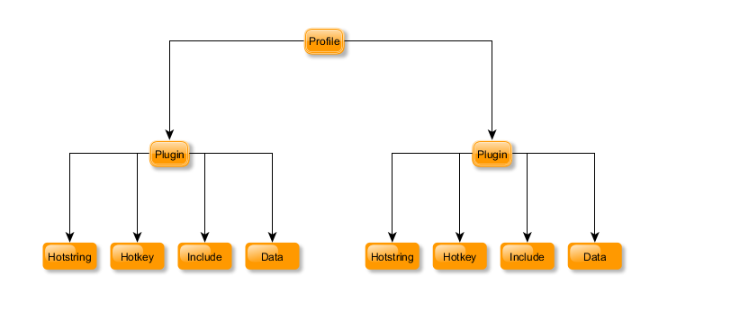

AutoHotkey Snippit
Version: 0.7.3
AutoHotkey Snippit is a Program designed with the intention of having multiple types of Hotkeys, HotStrings and Include Plugins, see figure 1.
AutoHotkey Snippit can import/export profile with plugin of a single file. This make is very easy to share plugins and profiles with many users.
AutoHotkey Snippit is designed using Profiles and Plugins. Profiles are Generally what the plugins will apply to. Plugins are actions taken that may be taken when the Profile matches the specified condition set.
Plugins may contain three flavors.
- Hotkeys - These are Actions that are taken when a specified hot key is pressed such as Ctrl+Win+A ,
- HotStrings - These are the Actions taken when a keyboard sequence is pressed such as sayhello and are often use to create text replacements for such things as auto correct.
- Includes - These are custom Actions that can be anything supported by the AutoHotkey Scripting language including custom Hotkeys and HotStrings. Includes are more powerful but more difficult then working with Hotkeys and HotStrings. Most if not all of your need Hotkeys and HotStrings will probably do the job.
Some Features of AutoHotkey Snippit
Figure 1:

Figure 2: